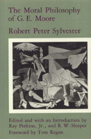

A close examination of Moore's the early essays show that Moore’s famous "naturalistic fallacy argument" has been widely misunderstood
A close examination of Moore's the early essays show that Moore’s famous "naturalistic fallacy argument" has been widely misunderstood


 A close examination of Moore's the early essays show that Moore’s famous "naturalistic fallacy argument" has been widely misunderstood
A close examination of Moore's the early essays show that Moore’s famous "naturalistic fallacy argument" has been widely misunderstood

|  |
The Moral Philosophy of G. E. MooreRobert Peter Sylvester, edited by Ray Perkins, Jr. and R. W. Sleeper, foreword by Tom Regancloth EAN: 978-0-87722-645-1 (ISBN: 0-87722-645-8) |
"One of the most valuable, and refreshing features of Sylvester’s study is the masterful way it wipes away the encrustations of wrong-headed criticism and ill-formed interpretation of Moore’s moral philosophy that have accumulated over the past fifty years or so."
—Lynd Forguson, University of Toronto
This study of G. E. Moore’s work in moral philosophy draws upon a close examination of the early essays that preceded the writing of Principia Ethica in order to ground the author’s view that Moore’s famous "naturalistic fallacy argument" of Principia has been widely misunderstood. At the time of his death in 1986, Robert Peter Sylvester was in the process of preparing this book for publication. That process has been brought to completion by Ray Perkins, Jr., and R. W. Sleeper. Sylvester’s reappraisal of the moral philosophy of G. E. Moore argues that criticism of the work of this major twentieth-century British philosopher has been based on misinterpretation of his unified position. He treats Moore’s ideas about "What is Good?", "What things are Good?" and "What ought we to do?" as forming a coherent system.
To bring this work up to date since the author’s death, the editors have provided a bibliographic essay following each chapter in which recent scholarship is discussed.
Robert Peter Sylvester was New England Professor of Philosophy at New England College and previously Chair of the Department of Philosophy at the University of New Hampshire.
Ray Perkins, Jr., presently associated with the University System of New Hampshire, is a former colleague of Professor Sylvester at New England College.
R. W. Sleeper is Professor Emeritus of Philosophy, Queens College of the City University of New York.
© 2015 Temple University. All Rights Reserved. This page: http://www.temple.edu/tempress/titles/744_reg.html.